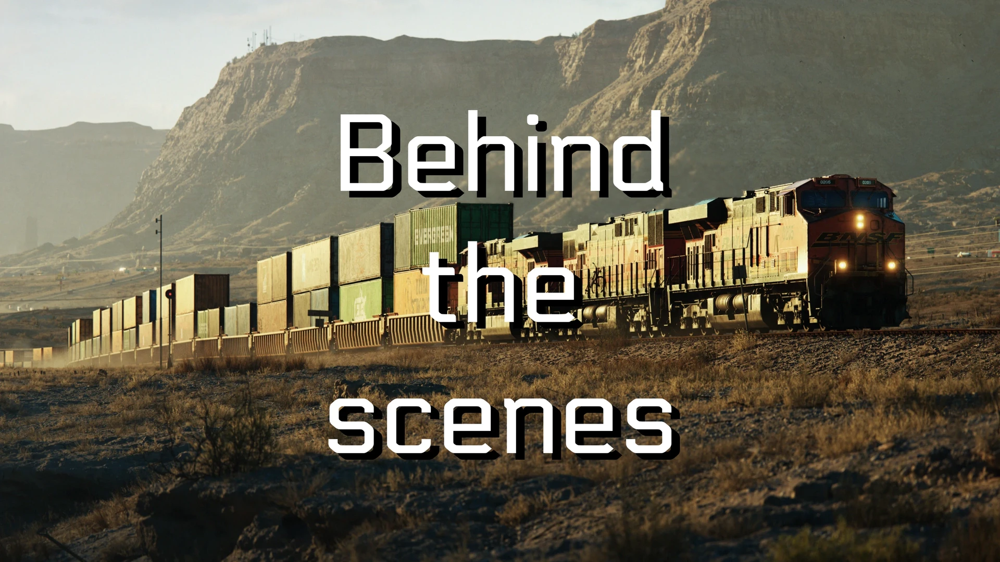
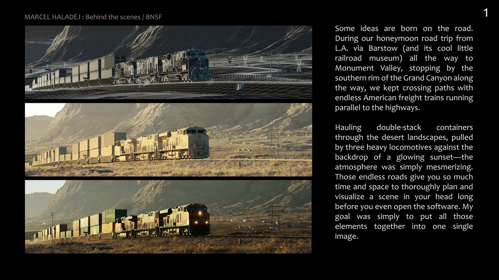
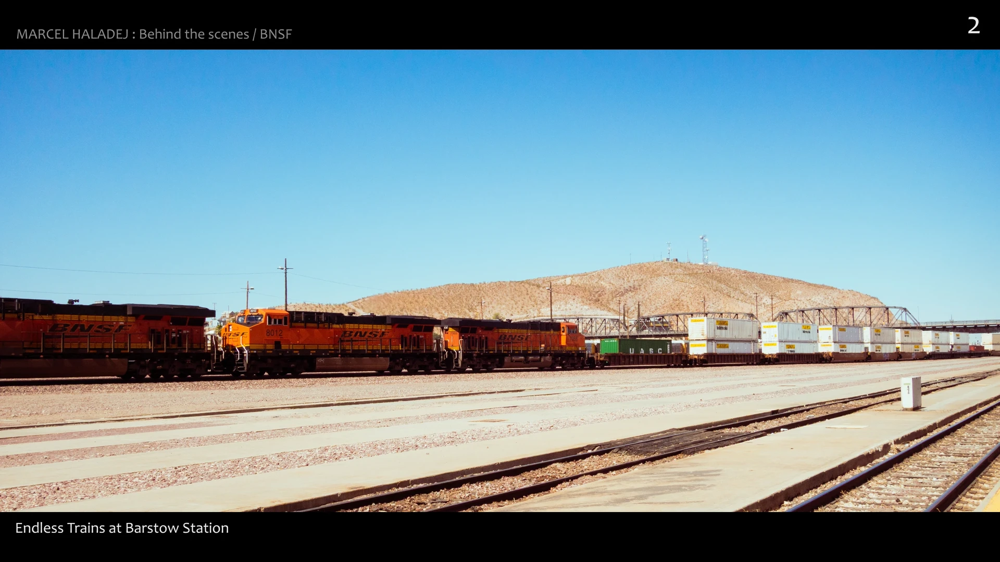
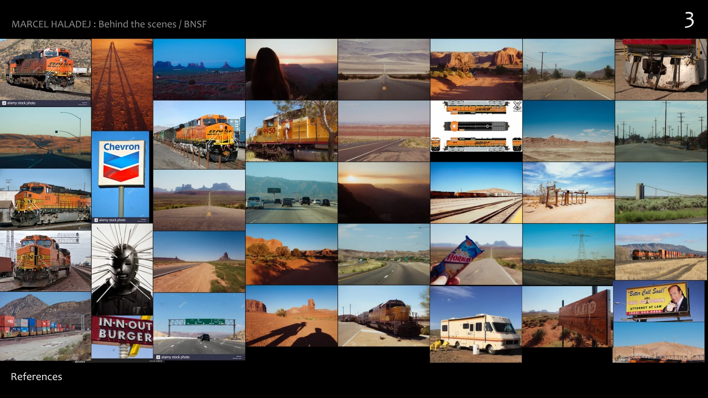
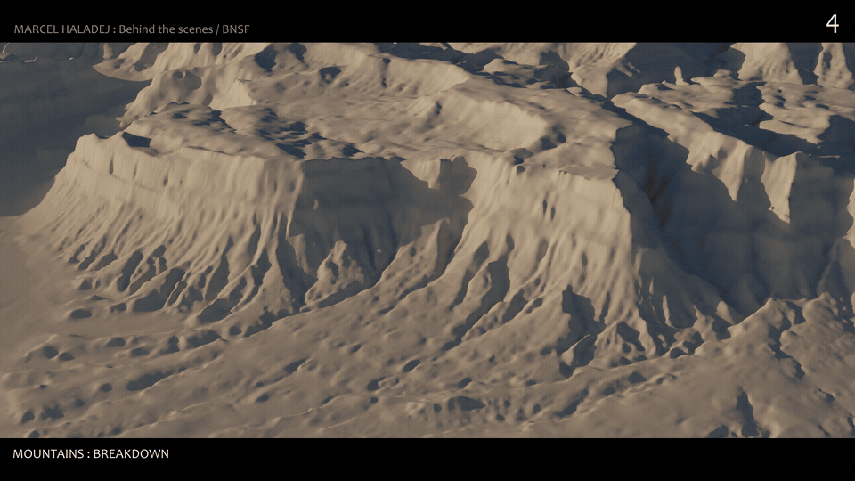
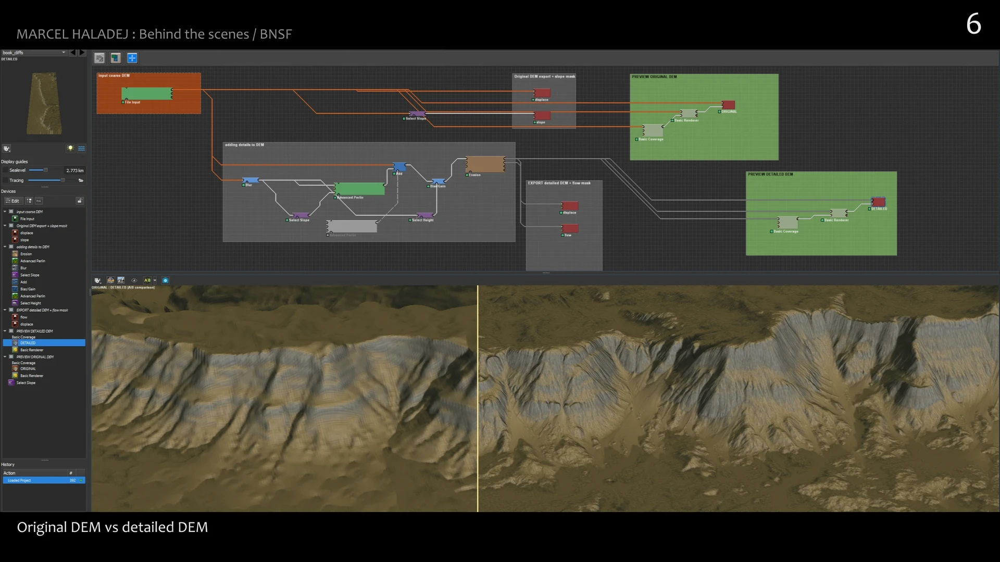
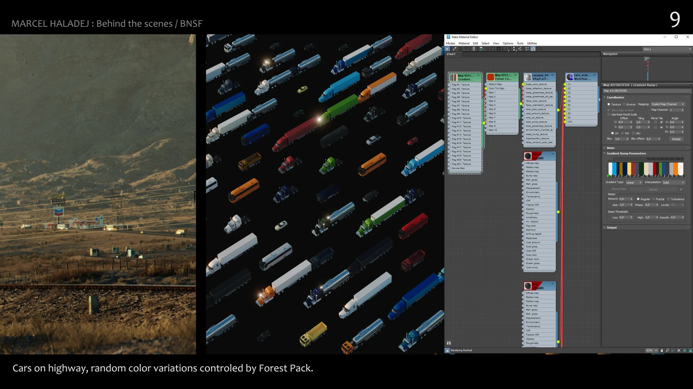
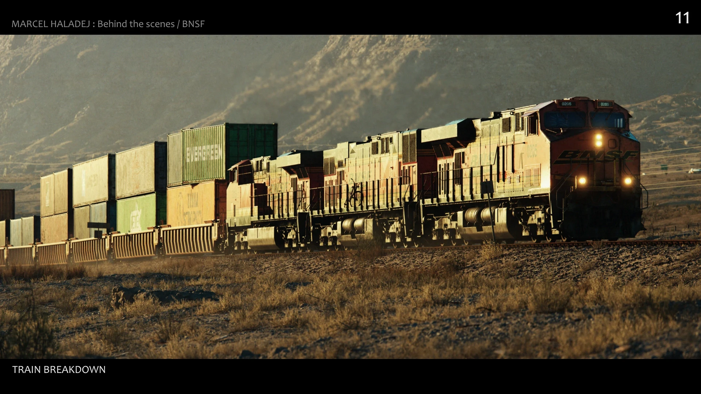
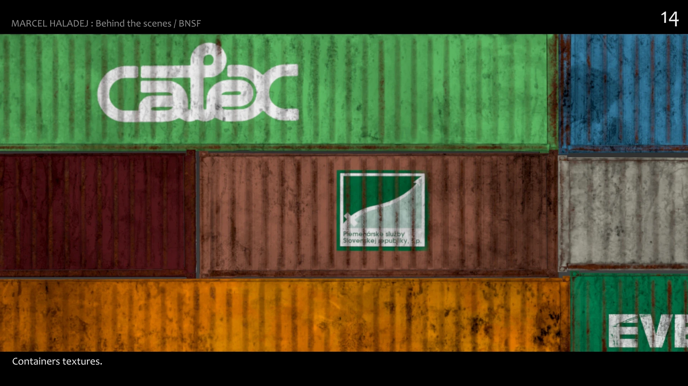
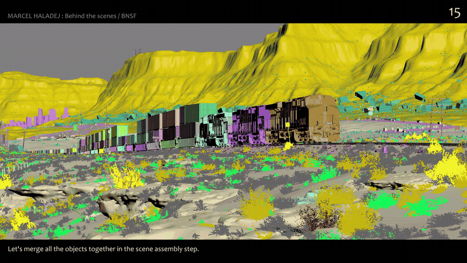
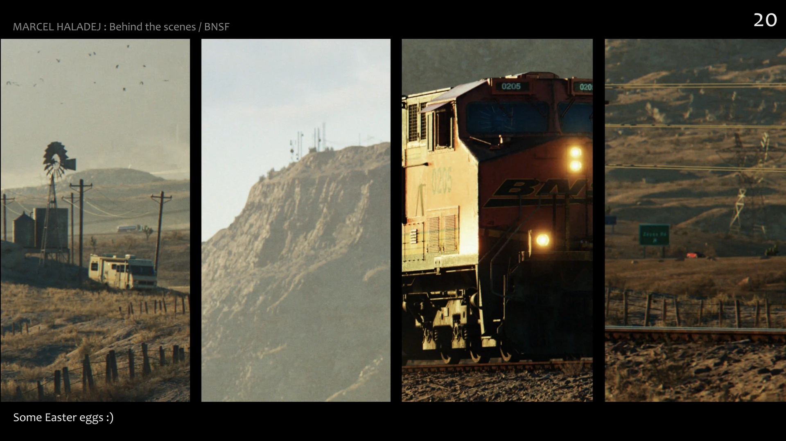
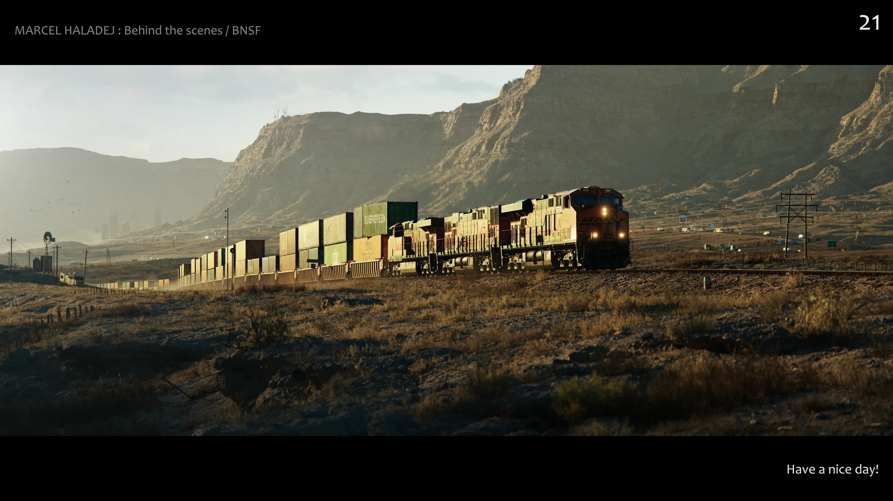
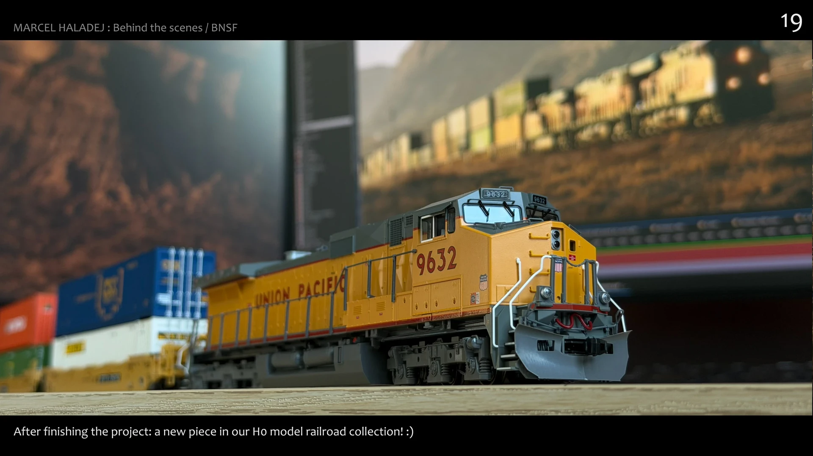
Marcel Haladej氏による、アメリカの砂漠を走るBNSFの貨物列車を描いたCG作品のメイキング。旅先での着想からリファレンス収集、DEMベースの地形、Forest Packによる車の配置、コンテナのテクスチャ、シーンアセンブリまでをスライドと動画で解説している。
Marcel Haladej「Behind the scenes - BNSF」（ArtStation）
https://www.artstation.com/artwork/lEV3WY
Marcel Haladej氏のArtStation
https://www.artstation.com/vsha